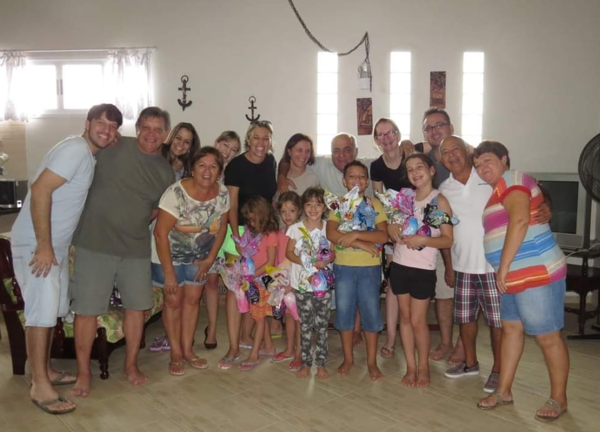

A família Chimentão é originária da Itália. A história da família Chimentão começa com um homem chamado Giacomo Chimentão, que nasceu em 1640. Giacomo era um agricultor e viveu na cidade de Parma, na Itália. Em 1660, Giacomo casou-se com uma mulher chamada Maria. Maria era filha de um homem chamado Giovanni Battista. Giovanni era um agricultor e vivia na cidade de Parma, na Itália. Maria e Giacomo tiveram um filho juntos chamado Giovanni Battista Chimentão. Giovanni nasceu em 1661.
CLIQUE AQUI